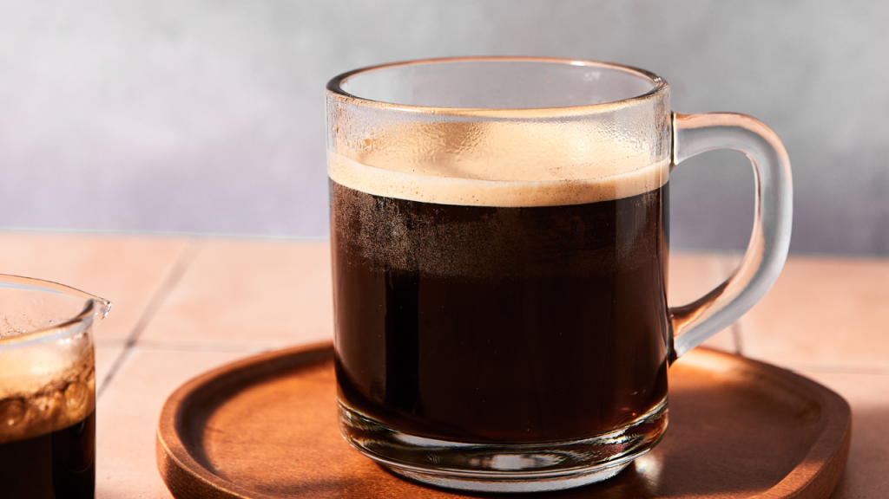
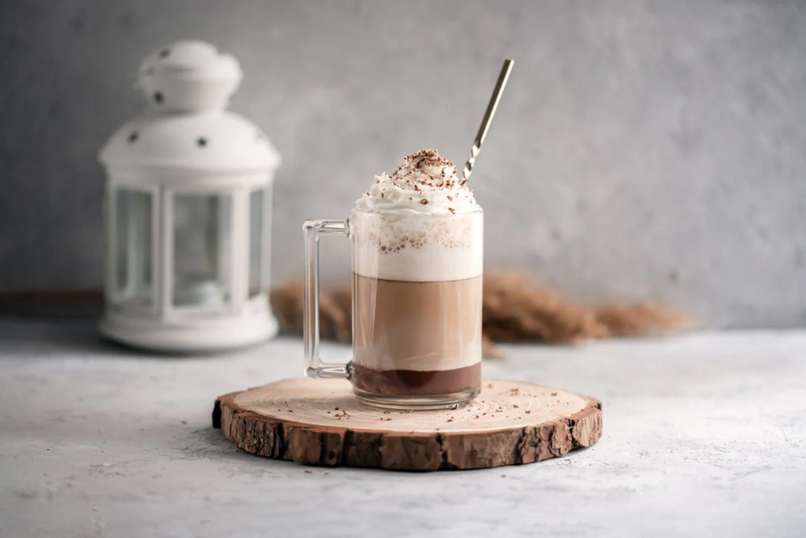
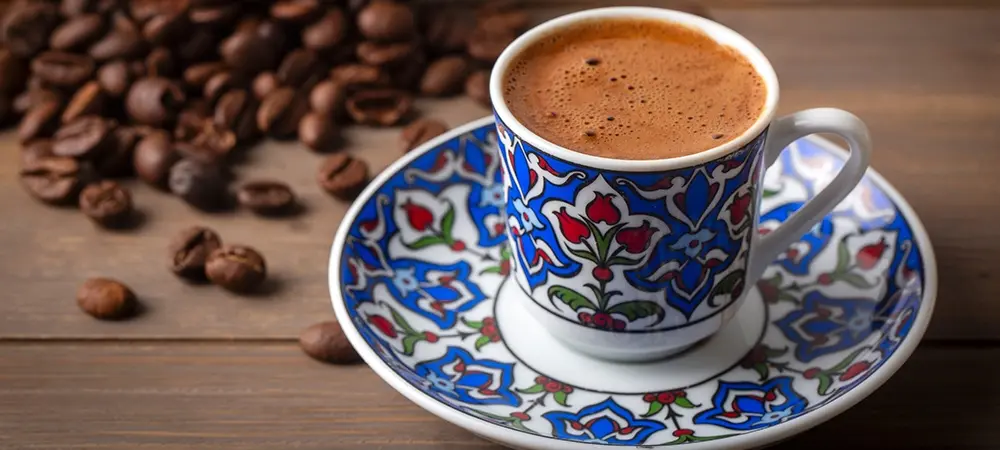

KAYACOFFY
#FREEPALESTINE
 İşyerimizde boykot ürünleri kullanılmamaktadır.
İşyerimizde boykot ürünleri kullanılmamaktadır.
İşyerimizde boykot ürünleri kullanılmamaktadır.
İşyerimizde boykot ürünleri kullanılmamaktadır.

Güne zinde başlamak isteyenler için saf enerji.
90 TL

Espresso'nun sıcak su ile inceltilmiş hali.
100 TL

Yumuşak içim, bol süt ve espresso dengesi.
120 TL

Eşit oranda espresso, sıcak süt ve yoğun köpük.
120 TL

Kahve ve çikolatanın tatlı buluşması.
140 TL

Geleneksel lezzet, bol köpüklü ve yoğun.
80 TL